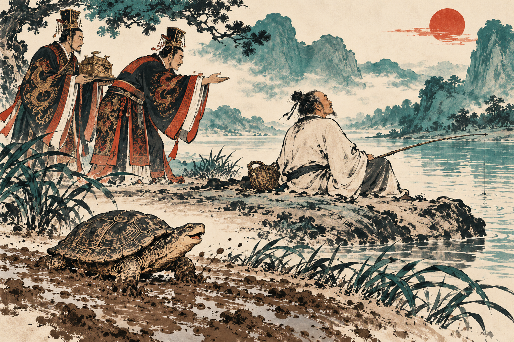

Ethics and Leadership · November 2–12, 2026
History of Ethics in China
Four illustrated readings about character, compassion, freedom, and power. Each takes about twenty minutes at a thoughtful classroom reading pace.
2026-11-02 · Voice A · 1,607 words · Four illustrations

2026-11-05 · Voice B · 1,508 words · Four illustrations

2026-11-09 · Voice B · 1,638 words · Four illustrations

2026-11-12 · Voice B · 1,608 words · Four illustrations